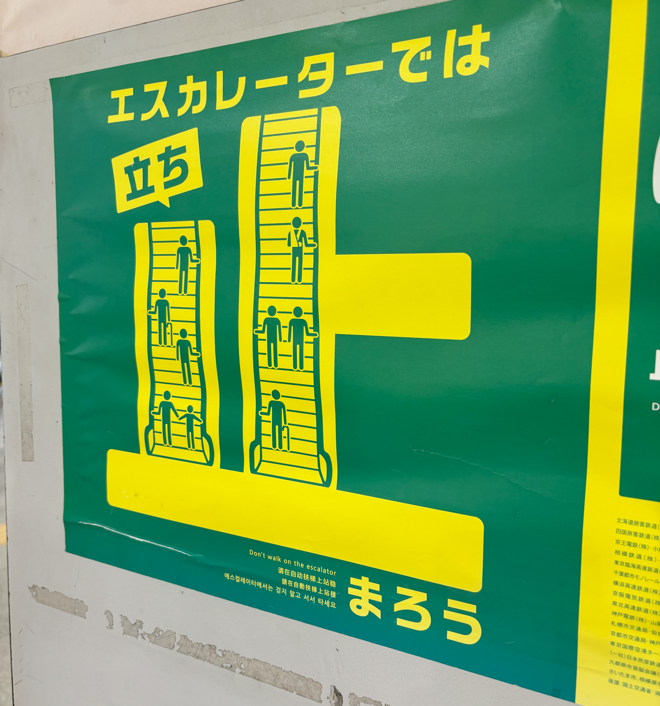
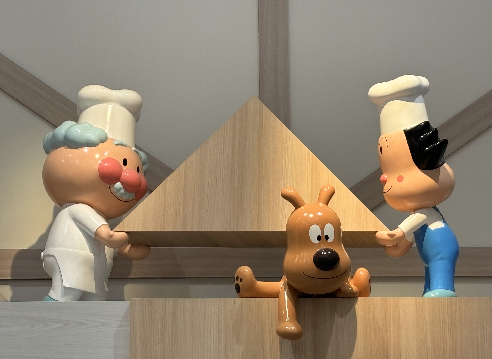
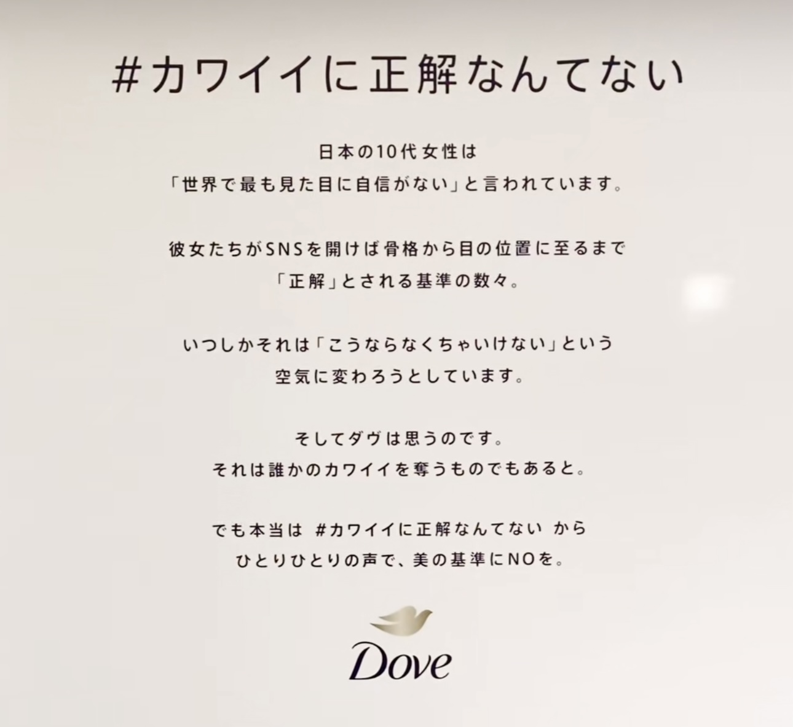
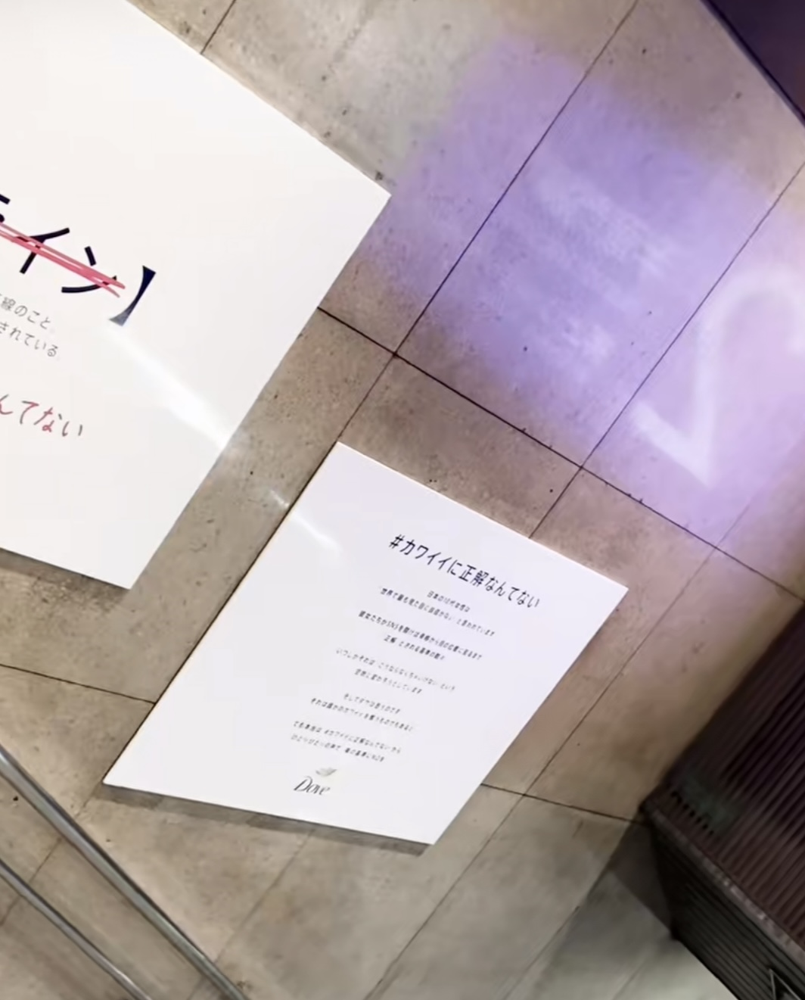

<!DOCTYPE html>
<html lang="jp"></html>
<head>
    <title>第１回路上観察！</title>
</head>
<body>
    <h1>路上観察</h1>
    <h2>photo.1</h2>
    <br>
    <ol>
        <li>撮影場所：新横浜駅改札出口付近</li>
        <li>撮影日時：2024．10.06</li>
    </ol>
    <div>
        新横浜にライブを見に行った際に見つけたものです。
    </div>
    <div>
        見たことある方もたくさんいると思うのですが、でかでかと「止」と書いてある中に
    </div>
    <div>
        エスカレーターの絵も描いてあり、子供でも見てわかるようなアイデアがいいなと思いました。
    </div>
    <link rel="s>tylesheet"href="./css/style.css"
    <h2>photo.2</h2>
    <br>
    <ol>
        <li>撮影場所:アンパンマンミュージアム</li>
        <li>撮影日時:2024.10.13</li>
    </ol>
    <div>
        この写真は、友達とアンパンマンミュージアムに、パンを買いに行った際に撮ったものです。
    </div>
    <div>
        子供だけでなく、大人までも楽しくなるような作りで、幼稚園生時代を思い出しました。
    </div>
    <h2>photo.3</h2>
    <br>
    <br>
    <ol>
        <li>撮影場所:渋谷駅</li>
        <li>撮影日時:2024.10.14 </li>
    </ol>
    <div>
        最近ネットニュースなどでも話題になったdoveの広告です。
    </div>
    <div>
        「かわいいの正解なんてない」というフレーズですがその広告自体が
    </div>
    <div>
        かわいいとはこういうことだという定義に聞こえてくるような内容で
    </div>
    <div>
        見ていて気分の良いものではありませんでしたが、話題だったこともあり撮ってみました。
    </div>

</body>
